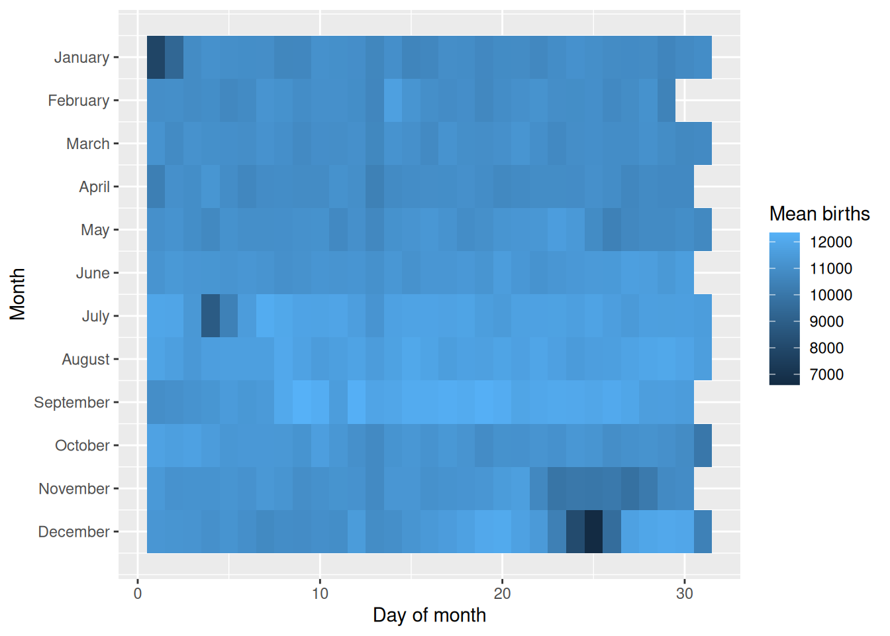
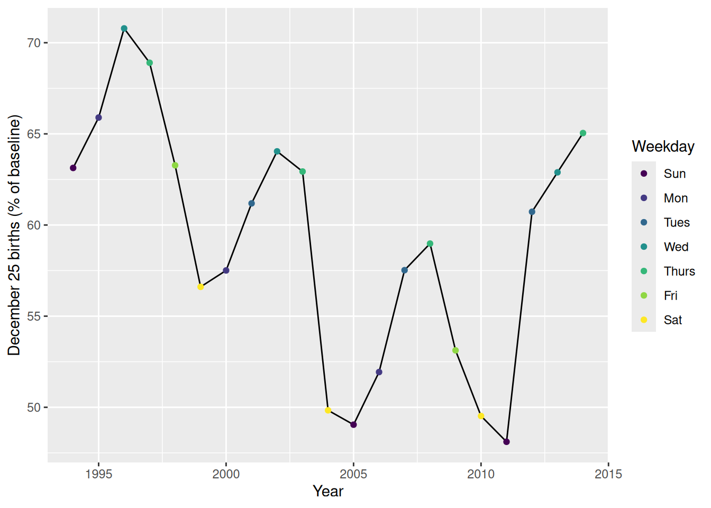
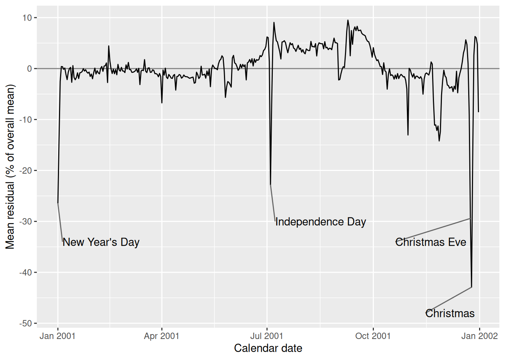

Rows: 7,670
Columns: 5
$ year <dbl> 1994, 1994, 1994, 1994, 1994, 1994, 1994, 1994, 1994, 19…
$ month <dbl> 1, 1, 1, 1, 1, 1, 1, 1, 1, 1, 1, 1, 1, 1, 1, 1, 1, 1, 1,…
$ date_of_month <dbl> 1, 2, 3, 4, 5, 6, 7, 8, 9, 10, 11, 12, 13, 14, 15, 16, 1…
$ day_of_week <chr> "Sat", "Sun", "Mon", "Tues", "Wed", "Thurs", "Fri", "Sat…
$ births <dbl> 8096, 7772, 10142, 11248, 11053, 11406, 11251, 8653, 791…Analyzing US Births

# A tibble: 21 × 5
year births_dec_25 christmas_weekday surrounding_day_average pct_of_baseline
<dbl> <dbl> <ord> <dbl> <dbl>
1 1994 7192 Sun 11392. 63.1
2 1995 7027 Mon 10664. 65.9
3 1996 7092 Wed 10019. 70.8
4 1997 7055 Thurs 10239. 68.9
5 1998 7020 Fri 11094. 63.3
6 1999 6674 Sat 11790. 56.6
7 2000 6719 Mon 11684. 57.5
8 2001 6603 Tues 10791. 61.2
9 2002 6774 Wed 10578. 64.0
10 2003 6744 Thurs 10716. 62.9
11 2004 6259 Sat 12560. 49.8
12 2005 6224 Sun 12690 49.0
13 2006 6409 Mon 12341. 51.9
14 2007 6624 Tues 11515. 57.5
15 2008 6471 Thurs 10971. 59.0
16 2009 6160 Fri 11596. 53.1
17 2010 6159 Sat 12437. 49.5
18 2011 5728 Sun 11907. 48.1
19 2012 6325 Tues 10415. 60.7
20 2013 6620 Wed 10526. 62.9
21 2014 6749 Thurs 10376. 65.0
[1] 0.828832# A tibble: 365 × 4
calendar_date month date_of_month mean_pct_resid
<date> <dbl> <dbl> <dbl>
1 2001-01-01 1 1 -26.5
2 2001-01-02 1 2 -13.9
3 2001-01-03 1 3 -2.52
4 2001-01-04 1 4 0.394
5 2001-01-05 1 5 0.363
6 2001-01-06 1 6 -0.149
7 2001-01-07 1 7 0.103
8 2001-01-08 1 8 -1.15
9 2001-01-09 1 9 -2.17
10 2001-01-10 1 10 -0.701
11 2001-01-11 1 11 -0.00655
12 2001-01-12 1 12 0.224
13 2001-01-13 1 13 -2.69
14 2001-01-14 1 14 0.576
15 2001-01-15 1 15 -1.74
16 2001-01-16 1 16 -2.20
17 2001-01-17 1 17 -1.76
18 2001-01-18 1 18 -0.837
19 2001-01-19 1 19 -1.95
20 2001-01-20 1 20 -0.847
21 2001-01-21 1 21 -0.768
22 2001-01-22 1 22 -0.584
23 2001-01-23 1 23 -0.0191
24 2001-01-24 1 24 -0.488
25 2001-01-25 1 25 -0.227
26 2001-01-26 1 26 -0.673
27 2001-01-27 1 27 -0.901
28 2001-01-28 1 28 -0.693
29 2001-01-29 1 29 -1.55
30 2001-01-30 1 30 -1.08
31 2001-01-31 1 31 -2.00
32 2001-02-01 2 1 -0.800
33 2001-02-02 2 2 0.0843
34 2001-02-03 2 3 -1.07
35 2001-02-04 2 4 -0.421
36 2001-02-05 2 5 -0.854
37 2001-02-06 2 6 -1.04
38 2001-02-07 2 7 0.0424
39 2001-02-08 2 8 0.402
40 2001-02-09 2 9 -0.548
41 2001-02-10 2 10 0.484
42 2001-02-11 2 11 0.565
43 2001-02-12 2 12 1.10
44 2001-02-13 2 13 -2.74
45 2001-02-14 2 14 4.45
46 2001-02-15 2 15 1.52
47 2001-02-16 2 16 -0.0648
48 2001-02-17 2 17 -0.968
49 2001-02-18 2 18 -0.116
50 2001-02-19 2 19 -1.01
51 2001-02-20 2 20 -0.190
52 2001-02-21 2 21 -1.21
53 2001-02-22 2 22 0.822
54 2001-02-23 2 23 -0.246
55 2001-02-24 2 24 -0.518
56 2001-02-25 2 25 0.229
57 2001-02-26 2 26 -0.468
58 2001-02-27 2 27 -0.492
59 2001-02-28 2 28 -0.790
60 2001-03-01 3 1 0.719
61 2001-03-02 3 2 -0.0804
62 2001-03-03 3 3 1.20
63 2001-03-04 3 4 -0.205
64 2001-03-05 3 5 -0.213
65 2001-03-06 3 6 -0.740
66 2001-03-07 3 7 -0.723
67 2001-03-08 3 8 -0.621
68 2001-03-09 3 9 -0.441
69 2001-03-10 3 10 -0.0601
70 2001-03-11 3 11 -0.738
71 2001-03-12 3 12 0.0479
72 2001-03-13 3 13 -3.15
73 2001-03-14 3 14 -0.502
74 2001-03-15 3 15 -0.289
75 2001-03-16 3 16 -0.399
76 2001-03-17 3 17 1.75
77 2001-03-18 3 18 -0.532
78 2001-03-19 3 19 -0.784
79 2001-03-20 3 20 0.0865
80 2001-03-21 3 21 0.143
81 2001-03-22 3 22 -0.745
82 2001-03-23 3 23 -0.705
83 2001-03-24 3 24 -0.253
84 2001-03-25 3 25 -0.357
85 2001-03-26 3 26 -0.998
86 2001-03-27 3 27 -0.998
87 2001-03-28 3 28 -1.14
88 2001-03-29 3 29 -1.61
89 2001-03-30 3 30 -0.959
90 2001-03-31 3 31 -1.55
91 2001-04-01 4 1 -6.74
92 2001-04-02 4 2 -0.283
93 2001-04-03 4 3 -1.28
94 2001-04-04 4 4 0.0752
95 2001-04-05 4 5 -1.70
96 2001-04-06 4 6 -1.96
97 2001-04-07 4 7 -1.16
98 2001-04-08 4 8 -1.47
99 2001-04-09 4 9 -1.86
100 2001-04-10 4 10 -1.94
101 2001-04-11 4 11 -1.34
102 2001-04-12 4 12 -1.17
103 2001-04-13 4 13 -4.23
104 2001-04-14 4 14 -1.57
105 2001-04-15 4 15 -1.51
106 2001-04-16 4 16 -1.17
107 2001-04-17 4 17 -1.30
108 2001-04-18 4 18 -1.88
109 2001-04-19 4 19 -1.69
110 2001-04-20 4 20 -1.26
111 2001-04-21 4 21 -1.55
112 2001-04-22 4 22 -1.60
113 2001-04-23 4 23 -1.61
114 2001-04-24 4 24 -1.78
115 2001-04-25 4 25 -1.91
116 2001-04-26 4 26 -1.82
117 2001-04-27 4 27 -1.74
118 2001-04-28 4 28 -1.68
119 2001-04-29 4 29 -2.87
120 2001-04-30 4 30 -2.76
121 2001-05-01 5 1 -0.716
122 2001-05-02 5 2 -1.20
123 2001-05-03 5 3 -1.96
124 2001-05-04 5 4 -1.62
125 2001-05-05 5 5 0.451
126 2001-05-06 5 6 -1.27
127 2001-05-07 5 7 -1.23
128 2001-05-08 5 8 -1.11
129 2001-05-09 5 9 -1.89
130 2001-05-10 5 10 -0.482
131 2001-05-11 5 11 -1.37
132 2001-05-12 5 12 -0.0978
133 2001-05-13 5 13 -3.56
134 2001-05-14 5 14 -0.0968
135 2001-05-15 5 15 0.686
136 2001-05-16 5 16 0.324
137 2001-05-17 5 17 -0.00599
138 2001-05-18 5 18 0.0187
139 2001-05-19 5 19 -0.233
140 2001-05-20 5 20 0.929
141 2001-05-21 5 21 1.59
142 2001-05-22 5 22 1.83
143 2001-05-23 5 23 2.50
144 2001-05-24 5 24 2.16
145 2001-05-25 5 25 -0.590
146 2001-05-26 5 26 -5.66
147 2001-05-27 5 27 -3.64
148 2001-05-28 5 28 -2.56
149 2001-05-29 5 29 -2.71
150 2001-05-30 5 30 -3.14
151 2001-05-31 5 31 -3.63
152 2001-06-01 6 1 2.08
153 2001-06-02 6 2 2.58
154 2001-06-03 6 3 1.11
155 2001-06-04 6 4 0.924
156 2001-06-05 6 5 0.379
157 2001-06-06 6 6 -0.341
158 2001-06-07 6 7 -0.0297
159 2001-06-08 6 8 0.825
160 2001-06-09 6 9 0.155
161 2001-06-10 6 10 0.813
162 2001-06-11 6 11 0.386
163 2001-06-12 6 12 0.732
164 2001-06-13 6 13 -2.23
165 2001-06-14 6 14 1.10
166 2001-06-15 6 15 1.30
167 2001-06-16 6 16 1.77
168 2001-06-17 6 17 1.13
169 2001-06-18 6 18 1.94
170 2001-06-19 6 19 0.506
171 2001-06-20 6 20 1.90
172 2001-06-21 6 21 1.22
173 2001-06-22 6 22 1.76
174 2001-06-23 6 23 1.62
175 2001-06-24 6 24 1.78
176 2001-06-25 6 25 2.56
177 2001-06-26 6 26 2.34
178 2001-06-27 6 27 2.69
179 2001-06-28 6 28 3.53
180 2001-06-29 6 29 3.76
181 2001-06-30 6 30 4.33
182 2001-07-01 7 1 6.20
183 2001-07-02 7 2 6.06
184 2001-07-03 7 3 1.33
185 2001-07-04 7 4 -22.8
186 2001-07-05 7 5 -7.15
187 2001-07-06 7 6 4.62
188 2001-07-07 7 7 9.06
189 2001-07-08 7 8 6.94
190 2001-07-09 7 9 5.49
191 2001-07-10 7 10 5.22
192 2001-07-11 7 11 4.26
193 2001-07-12 7 12 3.29
194 2001-07-13 7 13 1.88
195 2001-07-14 7 14 5.20
196 2001-07-15 7 15 5.27
197 2001-07-16 7 16 5.47
198 2001-07-17 7 17 5.07
199 2001-07-18 7 18 4.01
200 2001-07-19 7 19 3.11
201 2001-07-20 7 20 4.12
202 2001-07-21 7 21 5.07
203 2001-07-22 7 22 4.67
204 2001-07-23 7 23 4.89
205 2001-07-24 7 24 4.03
206 2001-07-25 7 25 3.86
207 2001-07-26 7 26 3.37
208 2001-07-27 7 27 3.96
209 2001-07-28 7 28 4.56
210 2001-07-29 7 29 3.78
211 2001-07-30 7 30 3.98
212 2001-07-31 7 31 3.23
213 2001-08-01 8 1 3.71
214 2001-08-02 8 2 3.12
215 2001-08-03 8 3 2.90
216 2001-08-04 8 4 3.86
217 2001-08-05 8 5 3.64
218 2001-08-06 8 6 3.53
219 2001-08-07 8 7 3.54
220 2001-08-08 8 8 5.33
221 2001-08-09 8 9 4.31
222 2001-08-10 8 10 4.33
223 2001-08-11 8 11 4.21
224 2001-08-12 8 12 4.90
225 2001-08-13 8 13 2.47
226 2001-08-14 8 14 4.49
227 2001-08-15 8 15 5.04
228 2001-08-16 8 16 4.93
229 2001-08-17 8 17 4.87
230 2001-08-18 8 18 4.88
231 2001-08-19 8 19 3.88
232 2001-08-20 8 20 5.28
233 2001-08-21 8 21 4.07
234 2001-08-22 8 22 4.16
235 2001-08-23 8 23 3.73
236 2001-08-24 8 24 3.99
237 2001-08-25 8 25 3.95
238 2001-08-26 8 26 3.70
239 2001-08-27 8 27 4.89
240 2001-08-28 8 28 5.97
241 2001-08-29 8 29 5.07
242 2001-08-30 8 30 5.07
243 2001-08-31 8 31 4.91
244 2001-09-01 9 1 -2.24
245 2001-09-02 9 2 -2.14
246 2001-09-03 9 3 -0.998
247 2001-09-04 9 4 -0.127
248 2001-09-05 9 5 0.358
249 2001-09-06 9 6 0.217
250 2001-09-07 9 7 3.17
251 2001-09-08 9 8 7.31
252 2001-09-09 9 9 9.51
253 2001-09-10 9 10 8.19
254 2001-09-11 9 11 2.51
255 2001-09-12 9 12 7.45
256 2001-09-13 9 13 4.76
257 2001-09-14 9 14 7.48
258 2001-09-15 9 15 8.18
259 2001-09-16 9 16 7.45
260 2001-09-17 9 17 8.29
261 2001-09-18 9 18 7.44
262 2001-09-19 9 19 7.48
263 2001-09-20 9 20 7.55
264 2001-09-21 9 21 6.93
265 2001-09-22 9 22 6.69
266 2001-09-23 9 23 6.58
267 2001-09-24 9 24 6.43
268 2001-09-25 9 25 5.73
269 2001-09-26 9 26 5.36
270 2001-09-27 9 27 5.26
271 2001-09-28 9 28 4.58
272 2001-09-29 9 29 3.59
273 2001-09-30 9 30 2.23
274 2001-10-01 10 1 4.10
275 2001-10-02 10 2 2.79
276 2001-10-03 10 3 2.14
277 2001-10-04 10 4 1.56
278 2001-10-05 10 5 1.71
279 2001-10-06 10 6 1.07
280 2001-10-07 10 7 0.389
281 2001-10-08 10 8 0.357
282 2001-10-09 10 9 -1.17
283 2001-10-10 10 10 1.13
284 2001-10-11 10 11 -0.411
285 2001-10-12 10 12 -0.652
286 2001-10-13 10 13 -4.04
287 2001-10-14 10 14 -1.17
288 2001-10-15 10 15 -0.0507
289 2001-10-16 10 16 -1.37
290 2001-10-17 10 17 -1.22
291 2001-10-18 10 18 -1.44
292 2001-10-19 10 19 -2.08
293 2001-10-20 10 20 -1.28
294 2001-10-21 10 21 -2.00
295 2001-10-22 10 22 -0.984
296 2001-10-23 10 23 -1.97
297 2001-10-24 10 24 -1.43
298 2001-10-25 10 25 -1.14
299 2001-10-26 10 26 -1.37
300 2001-10-27 10 27 -1.64
301 2001-10-28 10 28 -1.60
302 2001-10-29 10 29 -2.30
303 2001-10-30 10 30 -4.01
304 2001-10-31 10 31 -13.0
305 2001-11-01 11 1 0.0470
306 2001-11-02 11 2 -0.282
307 2001-11-03 11 3 -1.08
308 2001-11-04 11 4 -1.67
309 2001-11-05 11 5 -1.01
310 2001-11-06 11 6 -1.99
311 2001-11-07 11 7 -1.50
312 2001-11-08 11 8 -1.50
313 2001-11-09 11 9 -1.74
314 2001-11-10 11 10 -1.92
315 2001-11-11 11 11 -1.59
316 2001-11-12 11 12 -2.05
317 2001-11-13 11 13 -5.02
318 2001-11-14 11 14 -2.05
319 2001-11-15 11 15 -1.05
320 2001-11-16 11 16 -0.862
321 2001-11-17 11 17 -1.06
322 2001-11-18 11 18 -1.27
323 2001-11-19 11 19 -0.481
324 2001-11-20 11 20 1.30
325 2001-11-21 11 21 0.888
326 2001-11-22 11 22 -6.15
327 2001-11-23 11 23 -11.1
328 2001-11-24 11 24 -11.1
329 2001-11-25 11 25 -12.2
330 2001-11-26 11 26 -11.3
331 2001-11-27 11 27 -14.2
332 2001-11-28 11 28 -12.4
333 2001-11-29 11 29 -5.25
334 2001-11-30 11 30 -2.34
335 2001-12-01 12 1 -0.315
336 2001-12-02 12 2 -1.43
337 2001-12-03 12 3 -1.76
338 2001-12-04 12 4 -3.21
339 2001-12-05 12 5 -3.36
340 2001-12-06 12 6 -3.85
341 2001-12-07 12 7 -3.72
342 2001-12-08 12 8 -3.55
343 2001-12-09 12 9 -4.52
344 2001-12-10 12 10 -3.46
345 2001-12-11 12 11 -4.06
346 2001-12-12 12 12 -0.531
347 2001-12-13 12 13 -4.76
348 2001-12-14 12 14 -1.83
349 2001-12-15 12 15 -0.860
350 2001-12-16 12 16 -0.0233
351 2001-12-17 12 17 1.33
352 2001-12-18 12 18 3.03
353 2001-12-19 12 19 3.87
354 2001-12-20 12 20 5.64
355 2001-12-21 12 21 4.73
356 2001-12-22 12 22 0.928
357 2001-12-23 12 23 -9.08
358 2001-12-24 12 24 -29.4
359 2001-12-25 12 25 -42.9
360 2001-12-26 12 26 -17.6
361 2001-12-27 12 27 2.60
362 2001-12-28 12 28 6.29
363 2001-12-29 12 29 6.04
364 2001-12-30 12 30 4.78
365 2001-12-31 12 31 -8.57 